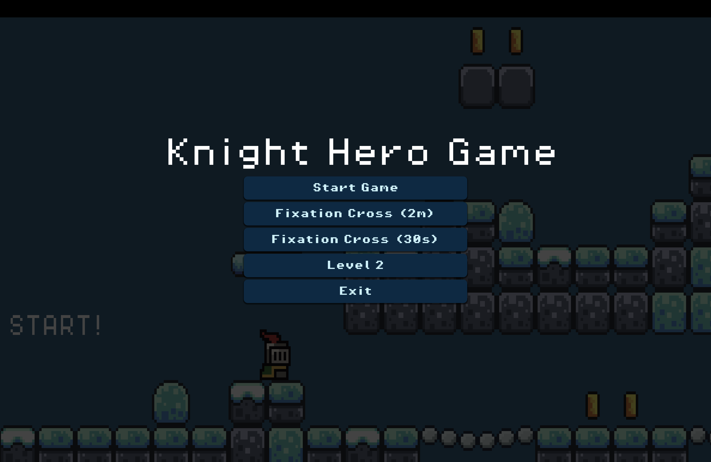
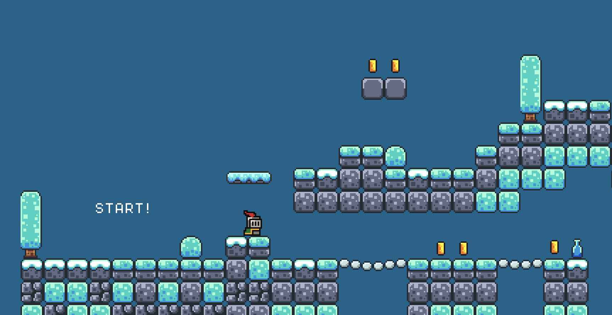

Gioco Interattivo 2D
Un gioco 2D sviluppato come progetto di tesi, con meccaniche costruite integrando tutorial, Godot e AI.
01Obiettivo
Sviluppare un gioco 2D funzionante come progetto di tesi, esplorando un ambiente di sviluppo nuovo partendo da zero. L'obiettivo non era solo costruire il gioco, ma capire il processo — come si sceglie uno strumento, come lo si impara, come si integrano risorse esterne (tutorial, AI) in un flusso di lavoro reale.

IMG GIF
GIF

IMG// clicca su un'immagine per ingrandirla
02Processo di creazione
Come per gli altri progetti, il primo passo è stato la ricerca dello strumento giusto. Il criterio: velocità di apprendimento, documentazione accessibile, comunità attiva. Godot ha soddisfatto tutti e tre.
Il linguaggio nativo di Godot, GDScript, ha una sintassi vicina a Python — leggibile, coerente, facile da seguire. Questo ha abbassato significativamente la curva di ingresso. I tutorial su YouTube hanno fornito la struttura di base delle meccaniche, che ho poi personalizzato e ampliato.
Per alcune meccaniche specifiche ho usato l'AI come strumento di supporto al codice — non per generare tutto, ma per sbloccare punti critici, capire pattern e accelerare l'integrazione di logiche più complesse.
03Stato del progetto
Il gioco è completo nella sua versione di tesi — meccaniche funzionanti, livello giocabile, obiettivi raggiunti. Il progetto è chiuso come consegna, ma aperto come punto di partenza per sviluppi futuri.